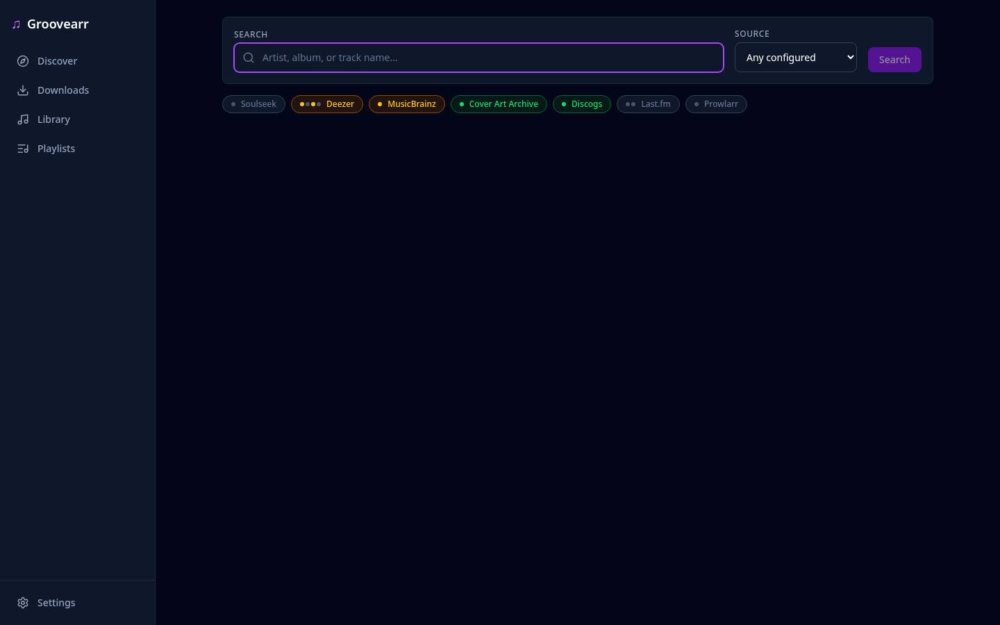
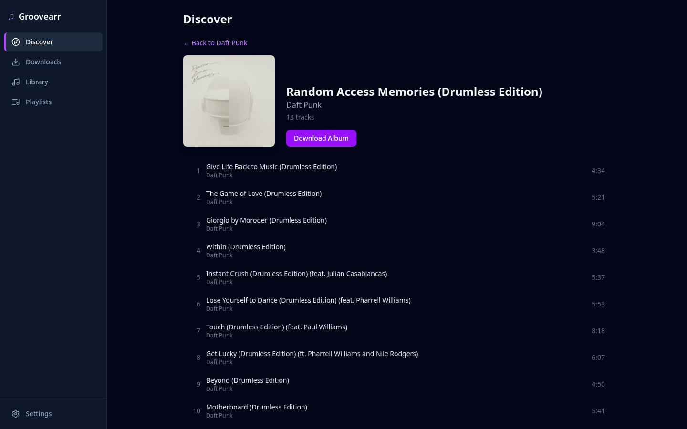
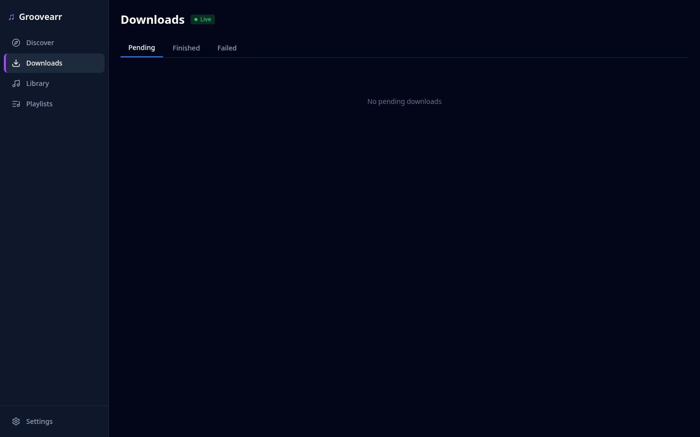
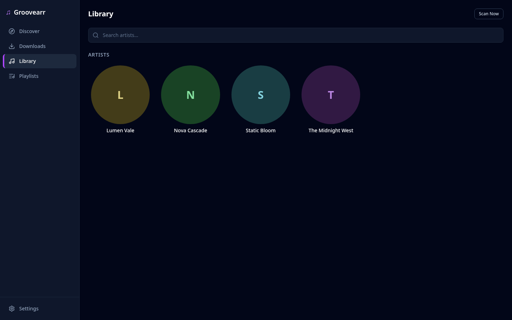

Single static binary
Go backend with the web UI embedded via go:embed.
One file, one process — run it and the UI is there.
self-hosted · single binary · mit
Groovearr searches, downloads, verifies, and organizes music from multiple sources through a single web UI. One static Go binary with the frontend embedded — no media server, no database server, nothing to babysit.

lean by design
Backend and web UI ship together via go:embed.
Run one file, open the browser — the only external services are the
download sources you choose to connect.
Go backend with the web UI embedded via go:embed.
One file, one process — run it and the UI is there.
No Plex, Jellyfin, or Navidrome dependency. Point Groovearr at a folder — it scans, tags, and organizes into your library.
Embedded SQLite (pure Go, no CGO) and a handful of small dependencies. Comfortable on modest hardware.
the real thing
Screenshots from the running application. Search across sources, watch downloads land in real time, browse the organized library.

search
One query, every configured source. Cross-source matching engine picks the right release.

discover
Find an album, see the exact tracklist, download it in one click.

downloads
Queued → downloading → import → library. Progress streamed live over SSE.

library
SQLite-backed artist, album, and track catalog. Tagged, organized, browsable.
features
From the first search to a fully organized, tagged library — Groovearr handles the pipeline so you don't have to.
Soulseek (via slskd), Deezer, Tidal, and RuTracker — with a cross-source matching engine that finds the right release.
queued → downloading → import → library, with live progress streamed to the UI via Server-Sent Events.
Add a source or metadata provider by implementing a single interface — no core changes required.
SQLite-backed artist, album, and track database with a filesystem scanner keeps your collection in sync.
Import Deezer playlists, sync changes over time, and auto-download the missing tracks straight into your library.
Configurable folder templates like {artist}/{album} ({year}) keep every file where it belongs.
ID3 and FLAC metadata is written automatically on import, so your library stays clean for any player.
Album art fetched and cached during import, so every album in your library has the right artwork.
Ranked targets like FLAC → MP3 320, search modes, and an upgrade scanner that flags below-target tracks in your library.
fast by architecture
A download manager's real cost is wasted work — the wrong release, the missing track, the manual re-order. Groovearr's architecture removes that work before it happens.
album_search resolves the
MusicBrainz tracklist and matches the track count before grabbing —
wrong releases never reach your disk.
One queue, two paths: single tracks pull direct from Deezer, Tidal, or Soulseek — albums grab as torrents from RuTracker via qBittorrent.
Reorder download sources or metadata priority in the UI — applied everywhere instantly, no restart.
Server-Sent Events push download and import progress to the UI — no polling, no refresh.
Per-endpoint rate limiting plus exponential backoff with jitter keeps bulk operations off the bad side of the sources you connect.
Every source is an isolated plugin — download,
album_search,
torrent,
metadata — behind one
interface. The core stays minimal; adding a source doesn't bloat it.
sources & metadata
Configure everything in the web UI — no config file editing. Downloads come from the sources you choose; every release is enriched with metadata from multiple providers.
Prowlarr — RuTracker via Torznab, downloaded via qBittorrent
Dedicated album_search
capability — finds the release at the album level, then verifies the exact
tracklist (track count + MusicBrainz) before anything downloads.
quick start
Docker for the full stack, or just the binary. Either way, you configure everything through the setup wizard and web UI.
# full stack: Groovearr + slskd + Prowlarr + qBittorrent
$ cp .env.example .env
$ make docker-setup
$ docker compose up -d
# setup wizard → connect your sources
$ open http://localhost:8008
# requires Go 1.26+ and Node 18+ for the UI build
$ make build
# binary at ./build/groovearr
$ ./build/groovearr
# creates config + library.db on first run
$ open http://localhost:8008
Setup guide, architecture, API reference, and plugin development docs are all in the repository.